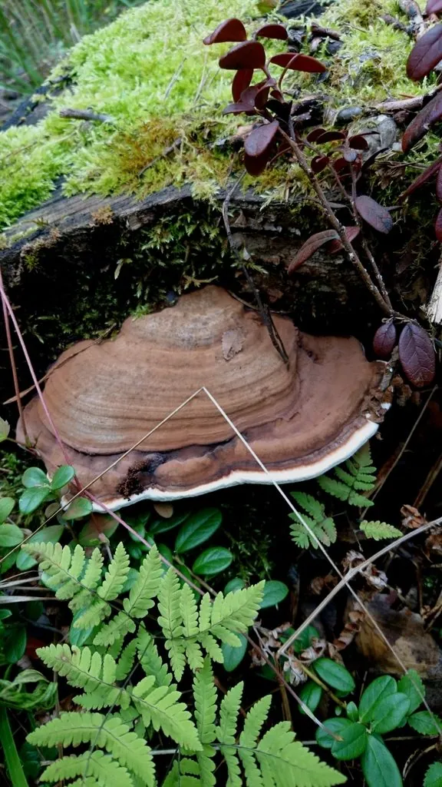

真菌 · 真菌界
树舌灵芝 Ganoderma applanatum

树舌灵芝的菌盖扁平如舌、附着于树干，木质坚硬，是多年生的大型多孔菌，可入药，也常被误认为灵芝。
- 分类
- 门担子菌门纲伞菌纲目多孔菌目科灵芝科属灵芝属
- 栖息环境
- 阔叶树的树干、树桩与倒木，喜温暖湿润林地
- 地理分布
- 中国各地林区广泛分布，北半球温带与亚热带常见
- 保护级别
- 暂无评估（野生药用真菌）
物种志
树舌灵芝是担子菌门灵芝科的大型木腐真菌，子实体多年生，无柄或短柄，菌盖半圆形或肾形，扁平如舌，侧生于树干上，直径可达 10–50 cm，厚 2–10 cm。菌盖表面灰褐色至棕褐色，有同心环纹和漆样光泽的薄皮；菌肉棕褐色、木质坚韧；腹面菌管层初为白色，后变为褐色，孔口细小，受伤后变深。
树舌灵芝生于阔叶树的树干、树桩与倒木上，能多年生长，是森林中常见的大型木腐真菌，对分解枯木有重要作用。它含有灵芝多糖、三萜类等成分，在中药里有“树舌”“平盖灵芝”之称，被认为有清热、保肝、提高免疫力的作用，但药效与灵芝（赤芝）不同，不能简单等同。树舌灵芝质地坚硬、味道苦涩，一般不直接食用；它也是真菌标本采集和野外观察的常见对象。
形态与习性
- 子实体多年生，菌盖扁平如舌
- 菌盖直径可达 10–50 cm
- 表面灰褐至棕褐，有同心环纹
- 质地木质坚韧
- 药用含灵芝多糖与三萜类
- 生境阔叶树树干与倒木
趣味知识
- 树舌灵芝扁平如舌，紧贴在树干上生长，因此得名。
- 它和灵芝同属，但药效不同，不能直接当作灵芝使用。
- 树舌灵芝能多年生长，是森林中常见的大型木腐菌。